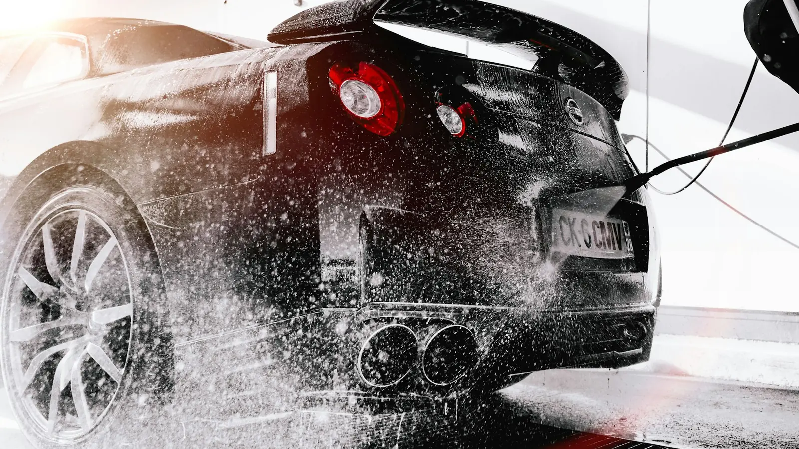
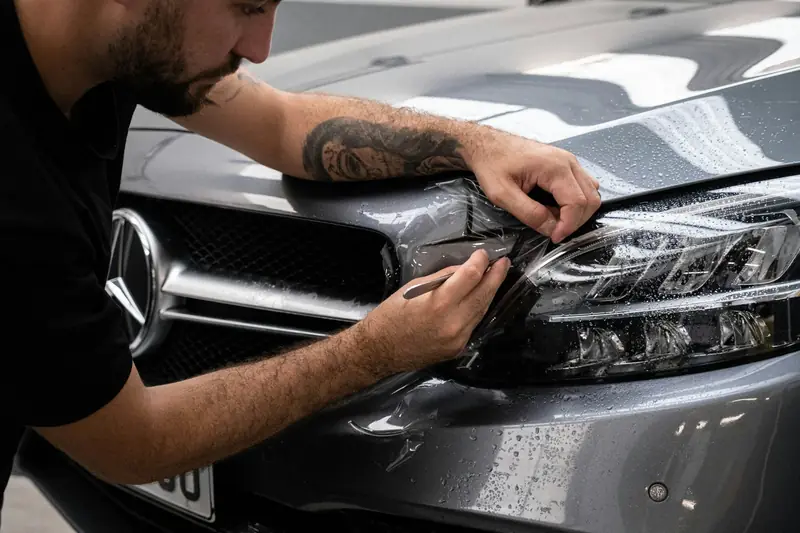
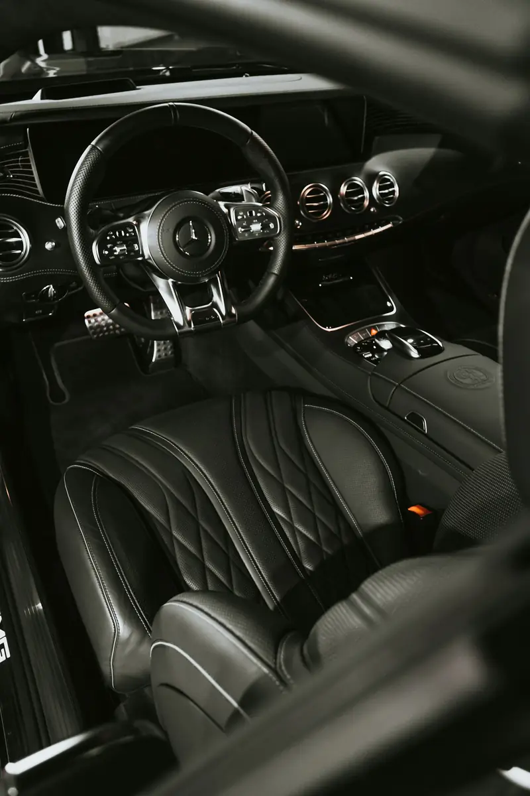
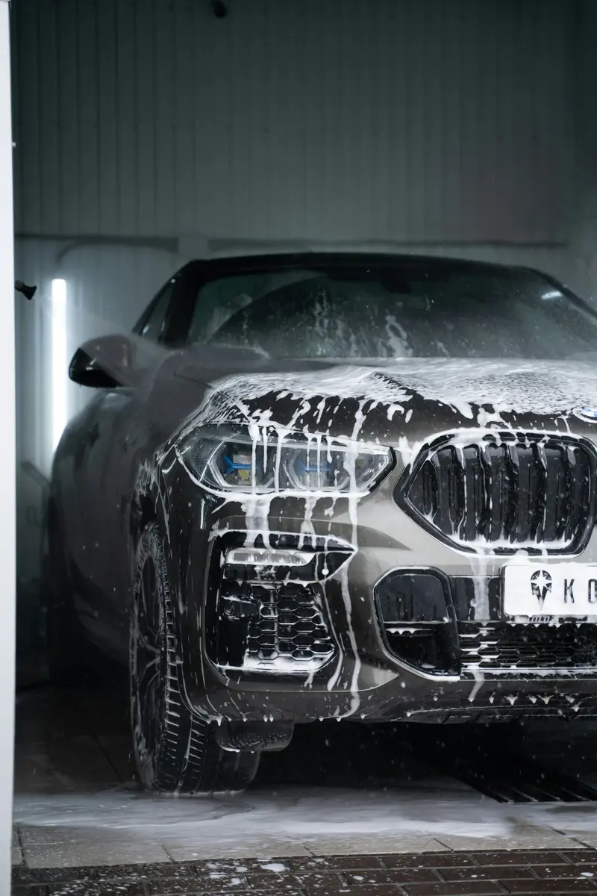
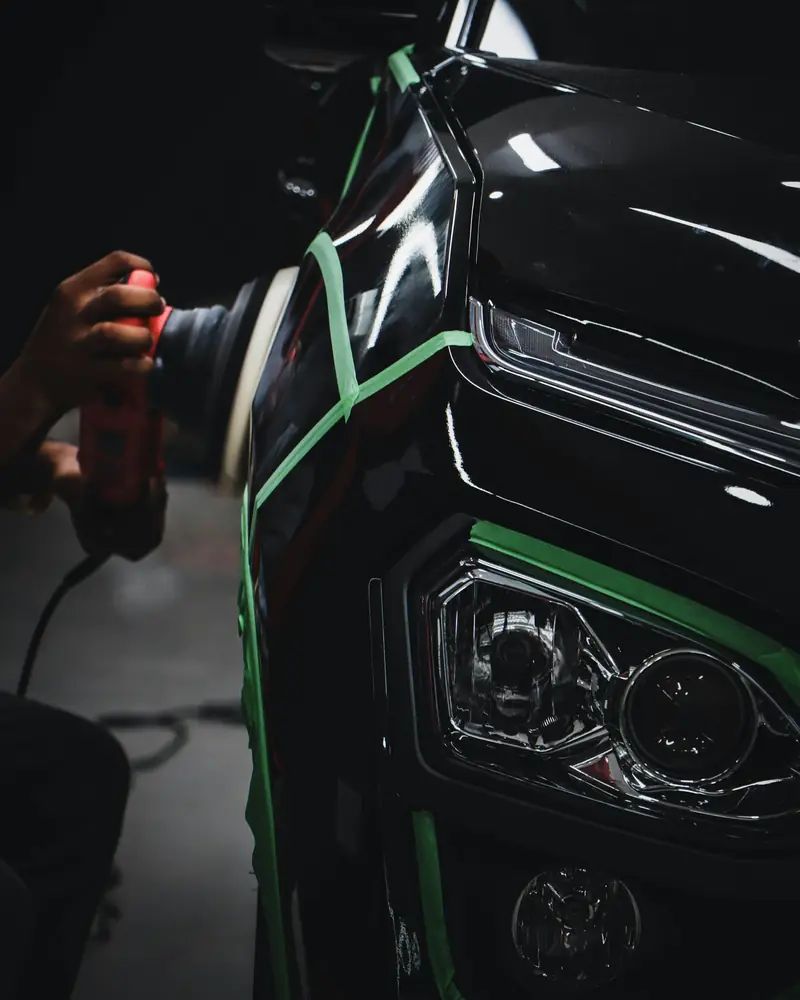
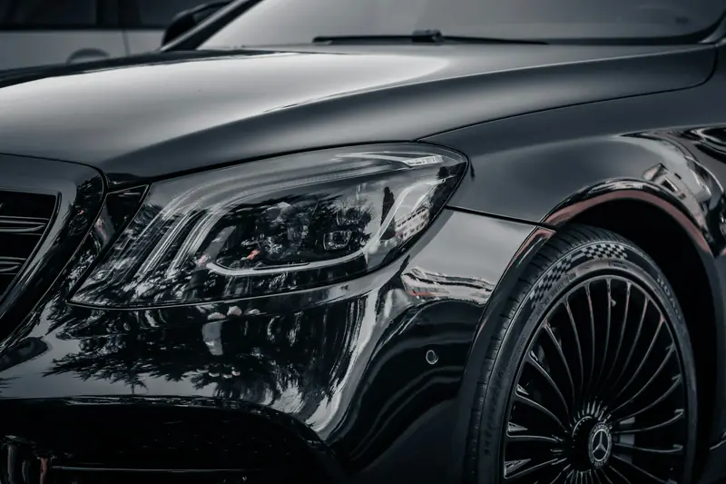
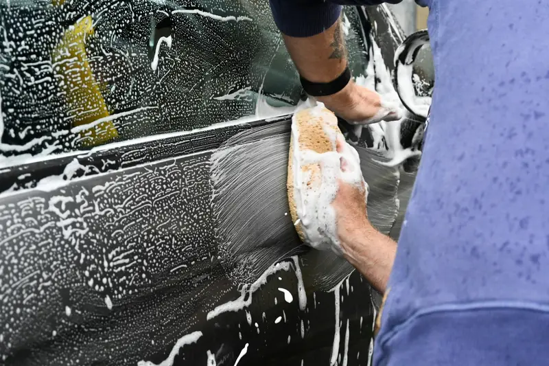

Detay rehberi.
Seramik kaplama, PPF, pasta cila ve günlük bakım hakkında en çok sorulan sorulara, stüdyodan sade ve doğru cevaplar.

Mevsimsel bakımYozgat Kışında Araç Boyası: Tuz, Kum ve Ayaza Karşı 7 Önlem
Yol tuzu, donup çözülen çamur ve sabah ayazı boyaya ne yapar? Kıştan önce yapılacak 7 şey.
 PPF
PPFPPF Nedir? Boya Koruma Filmi Hakkında Bilmeniz Gereken Her Şey
Taş darbesine karşı şeffaf zırh: PPF nasıl çalışır, ne kadar dayanır, söküldüğünde boyaya ne olur?
 Seramik kaplama
Seramik kaplamaGyeon One, Mohs, Syncro, CanCoat: Hangi Gyeon Ürünü Size Uygun?
Aynı marka, farklı ürünler. Garanti süreleri, farkları ve hangisinin size uygun olduğu.

KarşılaştırmaSeramik Kaplama mı, PPF mi? Hangisi Aracınıza Uygun?
İkisi rakip değil, farklı işler yapar. Hangi durumda hangisi mantıklı, tabloyla anlattık.

İç temizlikAraçta Kolloidal Gümüşle Sterilizasyon Nedir? Kimler İçin Gerekli?
Temizlik ile sterilizasyon aynı şey değil. Kolloidal gümüş ne yapar, kimler için gerekli?

Seramik kaplamaSeramik Kaplama Ne Kadar Dayanır? Ömrünü Uzatan 7 Bakım Kuralı
Aynı kaplama bir araçta 1 yıl, diğerinde 3 yıl dayanabilir. Farkı yaratan 7 alışkanlık.

Pasta & cilaHare İzleri Neden Oluşur? Pasta Cila Boyaya Zarar Verir mi?
Güneşte örümcek ağı gibi görünen o izler nereden geliyor ve pasta gerçekten boyayı inceltir mi?

Boya bakımıBoyadaki Su Lekeleri (Kireç İzleri) Nasıl Geçer?
Yıkamadan sonra kalan beyaz halkaların üç tipi var. Hangisi evde çıkar, hangisi çıkmaz?

YıkamaAracınızı Çizmeden Yıkamanın 8 Kuralı
Harelerin çoğu yıkamada oluşur. Detaylamacıların uyguladığı 8 basit kuralla siz de önleyin.